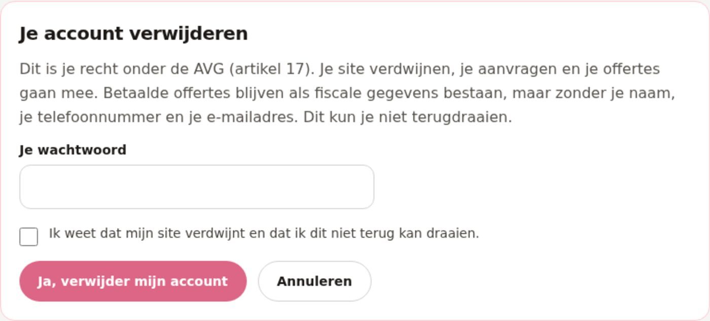

Wachtwoord en bevestiging
Zonder het juiste wachtwoord gebeurt er niets, en ook niet als de klactor de vakken vergeet aan te vinken. Er kan geen account verdwijnen door één klik.
In de privacyverklaring stond dat de klant een verzoek kon sturen om zijn gegevens te laten verwijderen. Nu staat er een knop: in zijn eigen account, met zijn wachtwoord en een bevestiging. Wat er precies weg gaat en wat blijft, staat op de pagina zelf.
Wat er verandert
"Verwijder mijn account" staat onderaan /mijn-account. De klant geeft
zijn wachtwoord, vinkt aan dat hij het begrijpt, en de server doet de rest.
Zonder het juiste wachtwoord gebeurt er niets, en ook niet als de klactor de vakken vergeet aan te vinken. Er kan geen account verdwijnen door één klik.
Zijn account en zijn sessies, zijn gepubliceerde sites met hun foto's, de aanvragen op die sites, en de offertes die hij niet betaald heeft (met het PDF-bestand).
Betaalde offertes blijven, want de belastingdienst kan ze zeven jaar later opvragen. Zonder naam, telefoonnummer en e-mailadres: alleen het offertenummer, de datum, het bedrag, de bedrijfsnaam en de plaats.
Na het verwijderen verschijnt een groene kaart met de aantallen: hoeveel sites, hoeveel aanvragen en offertes weggingen, en hoeveel offertes anoniem zijn blijven staan.
Op /privacy staat nu dat de klant zijn account zelf kan verwijderen,
en waarom een betaalde offerte anoniem blijft. De pagina en de code zeggen
hetzelfde.
De foto's van een verwijderd account worden gewist, ook die in de offertes van klanten die hun eigen site later opnieuw publiceren. Een foto die in een betaalde offerte staat, is al weg: die stond alleen als verwijzing.
Hoe het eruitziet
2 sites, 3 aanvragen en 1 openstaande offerte zijn gewist. 1 betaalde offerte is anoniem blijven staan, omdat de belastingdienst die zeven jaar later kan opvragen.
De site in beeld
Eén echte schermafbeelding van de klantpagina waar de verwijderknop staat. Klik op de foto om hem groot te bekijken.

Let op De foto's in deze schermafbeeldingen zijn lokale plaatshouders. De site zelf laadt zijn foto's van Unsplash; in de sandbox is die dienst niet bereikbaar. Wat je hier ziet is de echte opmaak en de echte tekst.
De bestanden
| Bestand | Wat er verandert |
|---|---|
| src/server/accountDelete.ts | Nieuw. De planning (wat gaat er weg) en de uitvoering (het weghalen). |
| src/server/accountDelete.test.ts | Nieuw. Vijf proeven: de planning, de uitvoering, het wachtwoord, de bevestiging, de sessie. |
| src/server/storage.ts | Accounts, sessies, sites, media, aanvragen en offertes kunnen nu verwijderd of geanonimiseerd worden. |
| src/server/accountHandler.ts | De actie delete-account: wachtwoord controleren, bevestiging eisen, de gegevens opruimen, de aantallen teruggeven. |
| src/components/AccountView.tsx | De roodomlijnde verwijdersectie, het wachtwoordveld, het getikvakje en de groene bevestigingskaart. |
| src/components/InfoPages.tsx | De privacyverklaring vertelt nu wat er gebeurt als de klant zijn account verwijdert. |
| src/components/QuoteView.tsx | Een lege klantnaam wordt niet meer getoond als "Naam: ". |
| src/utils/quote.ts | De offerte houdt bij dat hij geanonimiseerd is. |
| netlify/functions/account.mts | De opslag voor foto's wordt meegegeven, zodat die ook weg kunnen. |
| ROADMAP.md | Rij 7.25 af, rij 8.2 af, DoD 26 erbij. |
| docs/known-limitations.md | Wat er nu automatisch gebeurt bij een verzoek om te vergeten. |
De proeven
src/server/accountDelete.test.tssrc/server/accountDelete.test.tssrc/server/accountDelete.test.tssrc/server/accountDelete.test.ts/tmp/e2e_725.pyEerlijk
Er is geen kopie. Een klant die toch terug wil, moet zijn site opnieuw publiceren. De pagina waarschuwt daarvoor, met een getikvakje.
Zeven jaar is langer dan de wettelijke termijn van de AVG. Daarom blijft de
betaalde offerte staan, zonder persoonsgegevens. Dat staat zo op
/privacy, en de klant ziet het voordat hij bevestigt.
De verwijdering gaat via het account van de klant. Een losse aanvraag van een bezoeker die nooit een account maakte, wordt verwijderd door de twaalf maanden-job of door Klusbaas zelf.